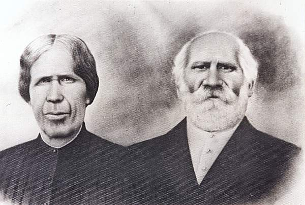
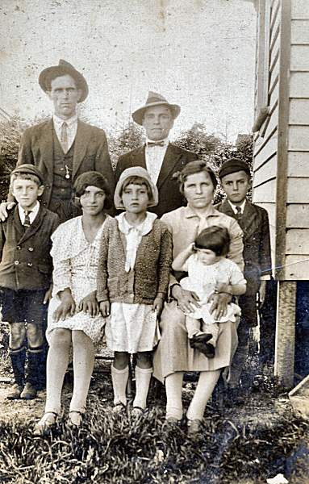
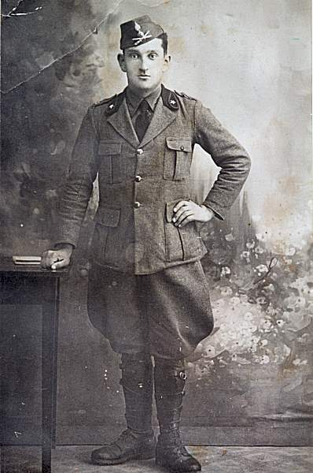
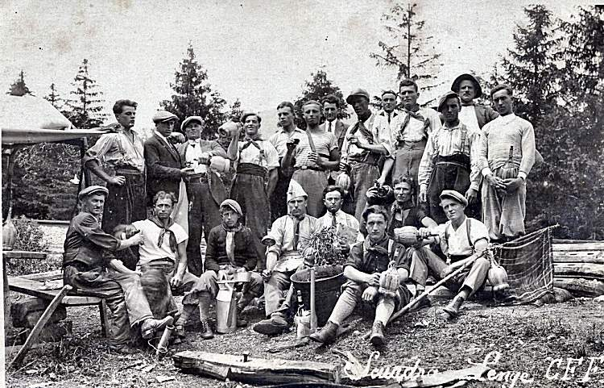
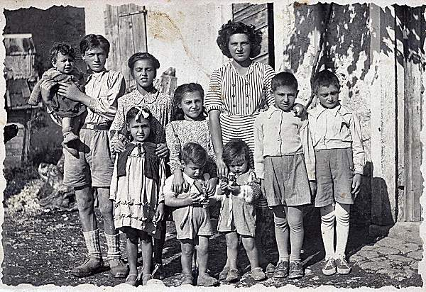
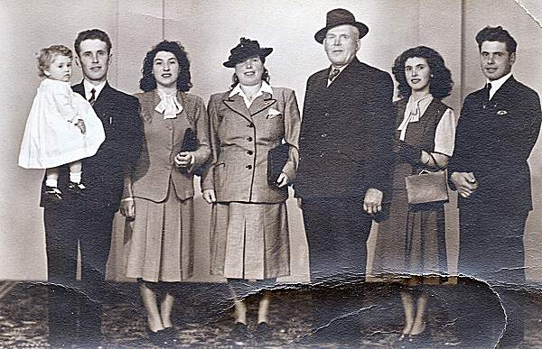
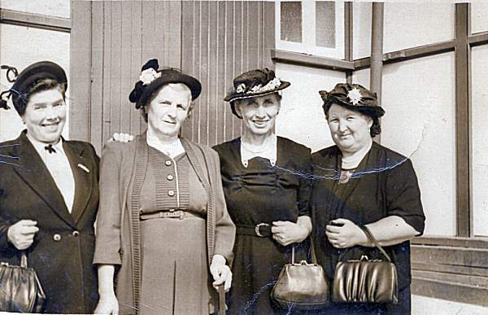

|
|
LE ORIGINI DEL NOME GHELLER
Origini della Famiglia Gheller L'origine del cognome è legato al nome di
Gallio, da cui proviene il capostipite Giacomino fu Nicolò.
Negli antichi documenti si parla infatti dei Gheller Illorum
de Gallio (quelli di Gallio) dove sembra abbiano avuto il
cognome di Girardi.
La prima testimonianza scritta
appare nel 1527 dove si rileva che Giacomino fu Nicolò Girardi
di Gallio è iscritto da tempo nel Comune di Foza e può
partecipare alle assemblee dei capifamiglia.
A
Foza i Gheller si stabilirono nel luogo che prese il loro
stesso cognome e nel Seicento divenne uno dei colonnelli del
Comune di Foza; nel Settecento risulta unito al colonnello di
Gavelle; quindi a quello della Piazza con il nome di Crumi o
Cruni.
I Gheller sono descritti nei documenti
come uomini intraprendenti e robusti, con le caratteristiche
delle popolazioni del nord da cui secondo gli studiosi traggono
origine. Risultano essere una famiglia molto prolifica, tanto
che agli inizi dell'Ottocento i Gheller sono presenti in otto
contrade. Dal 1500 al 1700 i Gheller hanno incarichi di un
certo rilievo nell'Amministrazione comunale di Foza. Antonio
Gheller, figlio del capostipite Giacomino e divenuto cittadino
di Foza il 3 febbraio 1568, è investito dell'importante carica
di sindaco e di decano, alternativamente dal 1572 al 1576 e dal
1578 al 1582.
Anche il fratello Domenico nel 1530
aveva svolto il ruolo di consigliere nelle assemblee del Comune.
Nella Vicinia generale dei capifamiglia del 24 maggio 1609 viene
nominato consigliere Piero di Cristian Gheller.
L'importante incarico di Decano viene conferito ancora ad un
Gheller, a Cristian fu Antonio, che presiede la Convicinia
dell'8 giugno 1653 (stipula l'accordo per il nuovo presbiterio
della chiesa ed ha l'incarico di controllare le strade per
Valstagna, per Enego e quella che dalla Valpiana proseguiva
verso Gallio).
Il 30 giugno 1748 Cristian Gheller
insieme a Giambattista Oro, consiglieri comunali, sono
incaricati di andare a Venezia e presentarsi al Doge per
definire positivamente le accuse contro la comunità di
Valstagna, Gallio ed Enego e risolvere la questione confinaria
che però si trascinò ancora per molti anni.
La
pastorizia a Foza era una delle attività prevalenti e i suoi
abitanti, quindi anche i Gheller. Da un documento del 1530
risulta che Domenico figlio di Giacomino Gheller fa il pastore.
Possiede molte pecore, sembra un centinaio; possiede campi,
boschi e prati e, oltre ad allevare pecore, svolge anche
l'attività di mercante, commerciando questi animali e i prodotti
che ne derivano: carni, pelli, sale, formaggi e lana. Nel 1567
gli succede il figlio Zamaria, anche lui pastore, iscritto nelle
liste del Comune, come pure lo zio Antonio che ricopre cariche
pubbliche e continua ad allevare pecore, diventando anche
estimatore di queste e di bestiame di grosso calibro. A volte
tra pastori e proprietari terrieri sorgevano delle controversie.
Pasquale Gheller ed altri, intorno al 1718, si dichiarano
molestati dalle popolazioni che impediscono il pascolo e nel
1738 si troveranno contrastati al ritorno dalla pianura
addirittura dalla popolazione locale.
Un
duro colpo per i pastori arrivò nel 1854 con l'abolizione
definitiva del pensionatici e il ritiro di tutti i permessi
delle poste (transumanza). Con il lento cambiamento delle
abitudini di vita verso un'esistenza più legata alla casa e alla
famiglia ed un evidente aumento demografico sorsero nuovi
problemi di carattere economico e sociale che diedero origine al
fenomeno dell'emigrazione.
In
tempi difficili e come molte altre famiglie, i Gheller
dovettero abbandonare il loro paese e cercar altrove fortuna,
stabilendosi in alcune province del Veneto (Vicenza e Treviso) e
in altre regioni d'Italia, ma anche all'estero.
Verso
il 1870 gli uomini di Foza si spingono di preferenza in
Germania, in Austria o nella Svizzera, favoriti dalla conoscenza
del loro dialetto tedesco (il cimbro), nei paesi della penisola
balcanica e più raramente in Francia. Si trattò di
un'emigrazione temporanea, ma alla fine dell'800 prese un certo
sviluppo l'emigrazione permanente verso alcuni Paesi dell'Europa
(Belgio e Francia), gli Stati dell'America Latina (Argentina,
Brasile, Colombia, Venezuela) e il resto del Mondo (Australia).
|







|

|
Tra i personaggi del Novecento legati alla Famiglia Gheller è da
ricordare la figura di Giuseppe Gheller,
responsabile dell'impresa edile che costruì l'attuale chiesa
parrocchiale in stile lombardo antico su progetto dell'arch.
Annibale Zucchini di Ferrara. I lavori,
iniziati nella primavera del 1925, furono conclusi nel 1926. E'
parente di quel Giacomo Gheller
che nel 1896 chiese ed ottenne dal Comune la licenza di scavare
sassi e sabbia. Nel 1925 vennero affidati alla ditta
Giovanni Maria Gheller di Marco di Foza i lavori di ripristino
dell'oratorio di San Rocco, distrutto dalla guerra.
|
|
{kind=link}
{kind=link}
{kind=link}
{kind=link}
{kind=link}
{kind=link}
{kind=link}